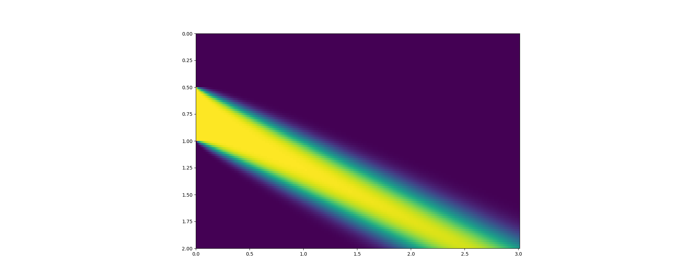

import handout as hd
import matplotlib.pyplot as plt
from mpl_toolkits.mplot3d import Axes3D
import numpy as np
import tensorflow as tf
import tensorflow_probability as tfp
doc = hd.handout.Handout(
'./step_1', title='Step 1')
doc.show()
nx = 100
xs = np.linspace(0., 2., nx)
dx = xs[1] - xs[0]
nt = 300
ts = np.linspace(0., 3., nt)
dt = ts[1] - ts[0]
c = .5
doc.show()
u = np.zeros([nx, nt])
u[xs < .5, :] = 1.
u[xs > .5, :] = 1.5
u[xs > 1., :] = 1.
doc.show()
for t in range(nt - 1):
u[0, t+1] = u[0, t]
u[1:, t+1] = u[1:, t] - c * dt / dx * (u[1:, t] - u[:-1, t])
fig = plt.figure(figsize=(20, 8))
plt.imshow(u, cmap='viridis', interpolation='none',
extent=[0, nt * dt, 2, 0])
doc.add_figure(fig)
doc.show()
